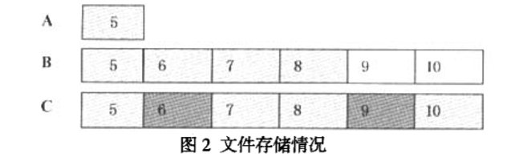

第3节：文件恢复原理
3.1 文件恢复简介
根据文件彻底删除的原理，我们可以知道文件的数据如果未被覆盖，则文件的数据还存在于数据区中。因此，要想把这些数据恢复出来．重建我们的文件，则需要首先找到这些数据的入口在哪里，即找到数据的起始簇号。
如果该文件的起始簇号小于两个字节所能表示的最大值65535，则用目录项中偏移为1AH-1BH处的低位字即可存储该起始簇号值。这种情况下，删除文件时，就不存在起始簇号高字被清零的问题，我们可以直接从目录项中偏移为1AH-IBH处找到文件数据的起始簇号。但如果起始簇号超出了低位字所能表示的最大值，则需要用目录项中偏移为14H-15H处的高位字来存储其值。这样，删除文件时，起始簇号的两个高字节就会被清零，仅保留了两个低字节。这种情况下，我们要想得到起始簇号的两个高字节，就需要参照创建时间值与之接近的其他正常文件的起始簇号来确定两个高字节。实际进行恢复时，我们可以根据该文件目录项前后的正常文件的目录项中的偏移为14H-15H处的值来判断起始簇号的两个高字节值。
其次，我们还需要知道文件数据存放在其余哪些簇上。在此之前，我们需要先了解一下Windows操作系统的簇的分配策略。Windows操作系统对文件分配簇时，采用下一可用分配策略。即为一个文件分配了一个簇后，直接由此簇位置向后搜索下一个可用簇，继续为其分配，而不会从文件系统的开始处进行重新搜索。基于这个分配策略，一个文件的数据存储有三种可能的情况：

图2中显示了三种不同的文件数据存储情况。淡灰色方框表示分配给这个文件使用的簇，深灰色方框表示分配给其他文件使用的簇，白色方框表示未分配的空簇。A图表示这个文件数据只占用了一个簇。B图表示这个文件占用了4个簇，簇号为5、6、7、8，而且系统给这个文件分配的这四个簇是连续的。c图表示这个文件数据占用了4个簇，簇号为5、7、8、10，但系统给这个文件分配的这四个簇是非连续的。
对于A图所示情况，恢复时，只需在确定起始簇号后，对起始簇中的相应文件大小的数据进行提取即可恢复文件。对于B图情况，恢复时，在确定起始簇号后，从起始簇开始，一直向后提取数据，直到提取出的数据大小等于文件大小时为止，这样就恢复出了原文件的数据。
对于C图情况，该文件数据是非连续存放的。删除文件后，簇5、7、8、10所对应的FAT表项值为“00000000H”。此时，如果簇6,9所对应的文件未被删除，则6,9所对应的FAT表项值为有效值00000001H～ 0FFFFFFFH。这样，恢复时，先由目录项中的文件大小计算出所对应的簇数。在确定起始簇号后，就可以从起始簇号对应的FAT表项开始向后搜索，记录下FAT表项值为“00000000H”的所对应的簇号。当记录下的簇号数等于文件大小所对应的簇数时，停止搜索。然后根据记录下的簇号，提取出对应簇中的数据，直到提取出的数据大小等于文件大小时为止，这样就恢复出了原文件的数据。
根据B图和c图情况下的数据恢复原理，提出以下基于数据簇连续分配的文件恢复算法和基于数据簇非连续分配的文件恢复算法。
3.2 基于数据簇连续分配的文件恢复算法
算法步骤如下：
- (1)确定被删除文件所在分区的引导扇区的位置。可以由主引导扇区中的分区表确定。
- (2)从引导扇区中读取“每扇区字节数”、“每簇扇区数”、“保留扇区数”、“FAT个数”和“每个FAT所占扇区数”的参数值。并计算根目录相对于引导扇区的起始位置(从0开始)。根目录相对起始位置 = 保留扇区数 + FAT个数 * 每个FAT所占扇区数。
- (3)根据被删除文件的文件路径，从根目录开始逐层往下遍历找到该文件所在目录的目录项集合，并遍历该目录项集合，找到文件名与被删除文件的文件名部分匹配，且后缀名一致的目录项。
- (4)从找到的目录项中读取偏移为1AH-1BH的两个字节，确定起始簇号的低位字。读取偏移为ICH-1FH的四个字节，确定文件数据的大小。
- (5)遍历该目录项集合的所有正常文件的目录项，记录每个目录项中偏移为14H-15H处的值，并找出出现频次最高的值，把该值作为起始簇号的高位字。
- (6)根据确定的起始簇号和文件大小，找到文件数据的起始簇，并读取数据，直到所读取数据大小等于文件大小时为止。
- (7)保存数据，并重命名文件。
- (8)如果得到的文件不是我们想要的原文件，则需从(5)中记录的起始簇号高位字的集合中选择另一个出现频次较高的值作为该文件起始簇号的高位字，重复步骤(6)(7)，直到恢复出原文件或遍历完高位字集合为止。如果遍历完(5)中的高位字集合还未恢复出原文件，则需遍历0000H-FFFFH的值并作为该文件起始簇号的高位字，重复步骤(6)(7)，直到恢复出原文件或遍历结束为止。
3.3 基于数据簇非连续分配的文件恢复算法
算法步骤如下：
- (1)-(5)同3.2中的步骤(1)-(5)。
- (6)由文件数据占用簇数N=文件数据大小/(每簇扇区数×每扇区字节数)，计算出文件数据占用簇数N。
- (7)根据(5)中确定的起始簇号，由FAT表项偏移量 = 簇号×4，确定起始簇号对应的FAT表项。
- (8)对起始簇号对应的FAT表项及其后面的每一个表项进行如下判断：若表项值为00000000H，则由簇号=FAT表项偏移量/4，计算并记录该FAT表项对应的簇号，否则跳过该表项，继续进行下一个FAT表项的判断。直到记录的簇号数为N时停止。
- (9)遍历(8)中已经记录下的簇号，读取每个簇号相应簇中的数据，直到所读取数据总大小等于文件大小时为止。
- (10)保存数据，重命名文件。
- (11)如果得到的文件不是我们想要的原文件，则需从(5)中记录的起 始簇号高位字的集合中选择另一个出观频次较高的值作为该文件起始簇号的高位字，重复步骤(6)(7)(8)(9)(10)，直到恢复出原文件或遍历完高位字集合为止。如果遍历完(5)中的高位字集合还未恢复出原文件，则需遍历0000H-FFFFH的值并作为该文件起始簇号的高位字，重复步骤(6)(7)(8)(9)直到恢复出原文件或遍历结束为止。